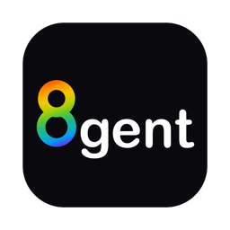

8gent · macOS, Windows and Linux · part of the kr8 family8gent
One local endpoint in front of any model loader. You choose a loader (llama.cpp, TensorFold, uzu,
Ollama, LM Studio, Strata) and a model; Hermes, kr8 and every other app keep the same address whatever you
choose: http://127.0.0.1:8436/v1. The models run on your own computer.
macOS
5659e44c1ed2733a330a22e2465a8eced73b87832e6704027e5378e05d079622Windows
05387aced33a389736ca985a10e8df8850f920301f81e4044cf7eb4f2c4d7e9cLinux
5900e64bf8a5a7567cf29f80e46a0546f46064029263daf329b570170305e316Every file, the service program on its own, and the source are on GitHub. The app looks for a newer version itself (Settings > Updates); on macOS it installs it: the download is checked against the SHA-256 GitHub publishes, and the version you had is kept as a recovery copy.
What it does
- One model, several loaders. A model you have as GGUF, as MLX and as a uzu folder is one entry. For the model you pick, each loader that can run it shows its measured speed, the memory it needs at the context window you choose, and what it can do. One press switches; if the new engine does not load, 8gent goes back to what was running and shows the engine's own reason.
- The same behaviour from every loader. The real context window in the model list, one standard "prompt too long" error (so agents compress and retry), thinking on or off the way each engine takes it.
- Memory. Loads on demand, unloads when idle, knows what Ollama is holding and refuses a load
that clearly cannot fit beside it (you can insist). A small model can stay loaded as
8gent-small. - Engine updates. A daily look for a newer llama.cpp, TensorFold and uzu, installed when idle. A version that needs a newer macOS than you have is held, with the reason.
- The app. Home, Chat, Models, Loaders, Monitor, Requests, Logs and Settings. The service keeps running when the window is closed, and can start at login.
Install
- macOS: open the
.dmgand drag 8gent to Applications. The app is not signed with an Apple Developer ID yet: the first time, right-click it and choose Open, or allow it under System Settings > Privacy & Security. - Windows: run the installer. It is not code-signed yet, so SmartScreen asks: choose More info, then Run anyway.
- Linux: make the AppImage executable and run it, or install the
.deb. - 8gent needs at least one loader and a model. On a Mac,
brew install llama.cppand any GGUF file in LM Studio's model folder is enough. Open Models, pick one, and press Switch.
Coming from uzu Home or TensorFold Home
On its first run 8gent takes over the Home app's selected model, context window, network sharing and memory mode, and answers on the Home app's port too, so Hermes and anything else pointed there keeps working. Switch the Home app's endpoint and daily updates off first, so that only one of them holds the model; the steps are in the README.
Loaders
| Loader | How 8gent uses it | Runs |
|---|---|---|
| llama.cpp | starts llama-server | GGUF files |
| TensorFold | starts tensorfold serve | MLX builds, on Apple Silicon |
| uzu | starts uzu's server | folders converted for uzu, Mirai's builds, on Apple Silicon |
| Ollama | uses Ollama's running server | what Ollama has pulled |
| LM Studio | uses LM Studio's local server | what LM Studio has loaded |
| Strata | uses Strata's running server | Strata's packs |
An early release, tested as follows. macOS: in daily use on an M5 MacBook with macOS 26.2, with real models on llama.cpp, TensorFold, uzu and Ollama; Hermes Agent answers through it. Built by GitHub and started from these files.
Windows and Linux: built by GitHub, where the service's 41 tests pass. Nobody has used these builds yet, and starting at login and self-installing updates are macOS only for now. LM Studio's and Strata's loaders are written but untested.